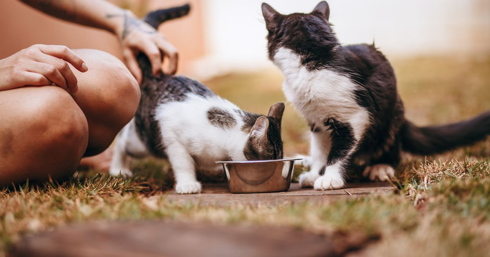

Este post contém links de afiliado. Podemos receber uma comissão em compras feitas através deles, sem custo adicional para você.
O Cat Mate C500 vale a pena para tutores de gato que precisam servir ração úmida com segurança quando não estão em casa — é um dos poucos comedouros automáticos do mercado pensados especificamente para esse tipo de alimento, graças ao sistema de gelo reutilizável sob os pratos.
Key Takeaways
- Dispensa até 5 refeições: uma disponível imediatamente e 4 programáveis.
- Duas bolsas de gelo reutilizáveis mantêm a ração úmida em temperatura segura por cerca de 8 a 12 horas em ambientes quentes (Cats.com, retrieved 2026-08-20).
- Tampa e prato são laváveis em lava-louças; a base é limpa com pano úmido.
- Compartimentos estreitos podem causar desconforto ("estresse de bigode") em gatos de face mais larga.
8,6/10 — Melhor opção do mercado para ração úmida programada
Resumo em uma linha: Resolve um problema que praticamente nenhum outro comedouro automático endereça bem: manter ração úmida segura por até 12 horas.
Ideal para: Tutores de gato que precisam deixar ração úmida ou semi-úmida programada durante o expediente de trabalho, sem depender de Wi-Fi.
Não ideal para: Quem alimenta só com ração seca, precisa de controle remoto via app, ou tem gato de face larga (persas, exóticos) sensível ao formato dos compartimentos.
Onde comprar: Mercado Livre, com preço e frete variáveis por vendedor.
comparativo de alimentadores automáticos mais vendidos para gatos
Diferente de comedouros comuns, o Cat Mate C500 posiciona os pratos de refeição sobre duas bolsas de gelo reutilizáveis, que retardam a deterioração da ração úmida. Em testes de terceiros, a estimativa realista de conservação segura ficou entre 8 e 12 horas em cozinha quente no verão — o suficiente para um dia de trabalho, mas não para viagens longas sem reabastecimento (Cats.com, retrieved 2026-08-20).
Na prática, isso significa que o aparelho atende bem a rotina mais comum de quem trabalha fora: sair de manhã, programar até duas ou três refeições úmidas ao longo do dia, e confiar que a ração vai chegar em condição segura até a próxima refeição. Para turnos de trabalho acima de 12 horas seguidas, ou para quem viaja por vários dias, o C500 não substitui um reabastecimento humano; nesse cenário, ração seca em um comedouro de maior capacidade tende a ser a opção mais segura.
O uso recorrente do C500 exige um pequeno ritual: congelar as duas bolsas de gelo com antecedência (geralmente na noite anterior), montar os pratos com a porção de ração úmida, e programar os horários no painel do aparelho antes de sair de casa. Não é um processo automático do início ao fim, como seria com um dispenser de ração seca comum, mas é o preço a pagar por poder oferecer ração úmida sem risco de estragar durante a ausência do tutor.
A tampa e os pratos são removíveis e vão à lava-louças, o que facilita a rotina de higiene, especialmente importante quando se trabalha com ração úmida, que suja e resseca mais rápido do que ração seca. A base com o mecanismo eletrônico não deve ser molhada diretamente; a limpeza recomendada é com pano levemente úmido. Vale higienizar o aparelho a cada ciclo de uso com ração úmida, não apenas semanalmente, para evitar acúmulo de odor e resíduo.
| Especificação | Cat Mate C500 |
|---|---|
| Refeições | 5 (1 imediata + 4 programáveis) |
| Tipo de ração | Seca, semi-úmida e úmida |
| Sistema de conservação | 2 bolsas de gelo reutilizáveis |
| Limpeza | Tampa e prato laváveis em lava-louças |
| Restrição | Compartimentos estreitos, não ideal para gatos de face larga |
| Onde encontrar | Mercado Livre — busca "Cat Mate C500" |
É a escolha certa para tutores que precisam deixar ração úmida programada por um período de trabalho (até ~12h) e não encontram essa função em modelos genéricos. Para rotinas com ração seca apenas, um modelo compacto com Wi-Fi (como os da categoria 1 do comparativo) costuma ser mais versátil e mais barato.
Dentro dessa recomendação, vale distinguir dois perfis específicos. O primeiro é o tutor que já alimenta o gato com ração úmida por indicação veterinária, geralmente ligada a hidratação, saúde renal ou controle de peso, e que precisa de uma solução automática compatível com esse tipo de alimento. O segundo é quem simplesmente quer variar a dieta do gato com sachês ou latinhas em parte das refeições, sem abrir mão da automação. Para os dois casos, o C500 é hoje uma das poucas opções amplamente disponíveis que resolve o problema de conservação sem precisar de um comedouro com compressor e alto custo de energia.
A diferença central entre os dois não é de qualidade, é de proposta. O Newpet 4L foi pensado para ração seca em grande volume (4 litros), com gravação de voz e sem depender de Wi-Fi, o que o torna mais indicado para cães de porte médio a grande ou casas com mais de um pet. Já o Cat Mate C500 resolve um problema mais específico: manter ração úmida ou semi-úmida em condição segura por várias horas, algo que o Newpet e a maioria dos comedouros automáticos de ração seca simplesmente não fazem.
Na prática, quem tem gato alimentado só com ração seca dificilmente precisa do sistema de refrigeração do C500, e o Newpet 4L (ou um modelo equivalente com maior capacidade) tende a custar menos e exigir menos manutenção diária. Já quem depende de ração úmida no cardápio do gato não tem muita alternativa direta: o C500 ocupa um nicho pouco disputado no mercado nacional de comedouros automáticos.
Além dos prós e contras técnicos, vale considerar o custo recorrente de manter o sistema funcionando: as bolsas de gelo precisam ser recongeladas a cada uso, o que exige espaço no congelador e disciplina de preparo na noite anterior. Para quem tem rotina muito imprevisível, esquecer de congelar as bolsas anula boa parte do benefício do aparelho. Também vale reforçar que o C500 não substitui a limpeza regular dos pratos; ração úmida resseca e gruda com facilidade, então usar o aparelho sem lavar as peças com frequência pode atrair insetos e gerar odor, principalmente em clima quente.
Esta análise foi construída a partir da ficha técnica e das fotos divulgadas em anúncios ativos do produto, cruzadas com reviews independentes de terceiros (Cats.com, PetsRadar) e com avaliações agregadas de usuários internacionais. Não se trata de um teste laboratorial conduzido por nós; sempre que possível, citamos a fonte original de cada dado de desempenho, como o tempo de conservação da ração úmida e a nota média de avaliações. Recomendamos conferir as avaliações mais recentes no próprio anúncio antes de comprar, já que a qualidade de fabricação pode variar entre lotes e vendedores. Veja nossa política editorial e de afiliados para entender como selecionamos e avaliamos produtos.
O produto é projetado e comercializado para gatos, com compartimentos de tamanho pensado para porções felinas. Cães de porte pequeno até conseguem se alimentar dele, mas a capacidade por compartimento é limitada para portes maiores.
Sim, para uso com ração úmida. As duas bolsas de gelo reutilizáveis mantêm a temperatura segura por cerca de 8 a 12 horas em ambientes quentes, então elas precisam ser congeladas novamente entre um uso e outro para manter a conservação eficaz.
Não. A programação é feita diretamente nos botões do próprio aparelho, sem conexão remota. Quem precisa de controle via celular deve considerar um modelo com Wi-Fi, geralmente voltado para ração seca.
O Cat Mate C500 resolve um problema específico — servir ração úmida com segurança — que a maioria dos comedouros automáticos genéricos não endereça. Fora desse caso de uso, vale considerar um modelo Wi-Fi mais versátil ou, para ração seca em maior volume, uma alternativa como o Newpet 4L.
guia completo de comedouro automático para pet
Ainda em dúvida se compensa migrar para um sistema automático? Veja nossa análise sobre se um comedouro automático vale a pena para o seu caso.
Escrito pela Equipe Smart Pet Gadgets. Veja nossa política editorial e como verificamos as fontes citadas neste artigo.
🐾 Confira o preço e a disponibilidade atual no Mercado Livre.
Ver no Mercado Livre →Link de afiliado: podemos receber uma comissão por compras feitas através deste link, sem custo adicional para você.
Nildo Alves — curadoria de produtos pet no Smart Pet Gadgets. Testa e pesquisa produtos para cães e gatos, cruzando especificações de fabricante com boas práticas veterinárias e dados de mercado.
Sobre o Smart Pet Gadgets · Contato · Política editorial e de afiliados